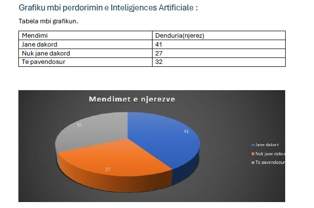

<!DOCTYPE html>
<html>
  <head></head>
  <body></body>
</html>


<h1>IBM Watson Health</h1>
<p>IBM Watson Health eshte nje program I cili perdoret per analiza të avancuara të të dhënave për të ndihmuar në vendimmarrjen mjekësore. Teknologjia e tij është përdorur dhe në studime klinike dhe për të ndihmuar në trajtimin e sëmundjeve komplekse si kanceri. Platforma gjithashtu ndihmon në menaxhimin e të dhënave mjekësore dhe përmirësimin e kujdesit ndaj pacientëve./p>
<h1>Google DeepMind Health</h1>
<p>DeepMind Health si program ka krijuar modele IA që mund të parashikojnë sëmundjet para se simptomat të shfaqen ne trupin tone. Teknologjia e saj është përdorur në partneritet me spitale për të përmirësuar diagnozat. Një nga sukseset më të njohura është algoritmi i tij që zbulon sëmundjet e syve qe në fazat e hershme.</p>
<h1>PathAI</h1>
<p>PathAI ndihmon në analizimin e biopsive për të identifikuar qelizat kancerogjene me saktësi të lartë. Sistemi redukton kohën e diagnostikimit dhe përmirëson efikasitetin e patologëve. Metodat e tij janë trajnuar me një bazë të gjerë të dhënash për të dalluar modelet e sëmundjeve.</p>
<h1>Zebra Medical Vision</h1>
<p>Zebra Medical Vision eshte nje platform qe përdor IA për të analizuar imazhet mjekësore dhe për të zbuluar sëmundjet në faza të hershme. Ajo mund te identifikoje nje game te gjere te semundjeve . Qëllimi kryesor i saj është të bëjë diagnostikimin mjekësor më të shpejtë dhe me të aksesueshëm globalisht.</p>
<h1>Qure.ai</h1>
<p>Qure.ai përdor IA për të analizuar rreze X dhe skanime CT, ,duke ofruar mundesi te shpejta dhe te sakta si tuberkulozit dhe pneumonisë. Sistemi është veçanërisht i dobishëm në zonat me mungesë të specialistëve radiologjikë. Përdoret në shumë vende dhe ka kontribuar ne përmirësimin dhe  kujdesin shëndetësor,vecanerisht ne rajonet me munges resursesh.</p>
<h1>Tempus</h1>
<p>Tempus përdor të dhënat gjenetike dhe klinike për të personalizuar trajtimet e pacientëve me kancer. Kjo platforma mbledh dhe analizon të dhënat për të ndihmuar mjekët në vendimmarrje më të informuar. Përdoret nga spitale dhe institute kërkimore për të zhvilluar trajtime të personalizuara.</p>
<h1>Pajisje dhe Aparatura Mjekësore me IA</h1>
<h1>Da Vinci Surgical System</h1>
<p>Da Vinci është një robot kirurgjik që ndihmon  kirurgët të kryejnë operacione me precizion të lartë. Ai minimizon rrezikun e komplikimeve dhe zvogëlon kohën e rikuperimit të pacientëve. Përdoret në operacionet e prostatës, kardiologjike dhe abdominale.</p>
<h1>Butterfly iQ</h1>
<p>Butterfly iQ është një pajisje ultrasonike portative që lidh telefonat inteligjentë me teknologjinë IA. Ajo perdoret për diagnostikimin e shpejtë të problemeve kardiake dhe abdominale. Pajisja është veçanërisht e vlefshme për zonat rurale dhe emergjencat.</p>
<h1>OrCam MyEye</h1>
<p>OrCam MyEye është një pajisje inteligjente për te ndihmuar personat me dëmtime të shikimit. Lexon tekstet, njeh fytyrat dhe ndihmon përdoruesit të orientohen në mjedisin e tyre, përmirësuar cilësinë e jetës së të verbërve.</p>
<ol>Përdorimet Kryesore të IA në Mjekësi:
    <li>Analiza e Imazheve Mjekësore: IA mund të analizojë radiografitë, skanimet CT, MRI, dhe ultratingujt për të identifikuar probleme shëndetësore</li>
    <li>Trajtimet e Personalizuara: Me ndihmën e IA, trajtimet mund të bëhen më të personalizuara, duke marrë parasysh të dhënat e pacientëve. </li>
    <li>Monitorimi i Pacientëve në Kohë Reale: Me teknologjinë IA, mund të monitorohen pacientët në kohë reale, duke mundësuar zbulimin e hershëm të problemeve shëndetësore. </li>
    <li>. Kujdesi për Personat me Aftësi të Kufizuara: Për ata që kanë probleme të shikimit ose të lëvizjes, pajisjet që përdorin IA, si OrCam MyEye</li>
    <li>. Përdorimi i Robotëve Kirurgjikë: Sistemet si Da Vinci Surgical System mund të ndihmojnë kirurgët të kryejnë operacione me precizion të jashtëzakonshëm</li>
</ol>


        <h1>Avantazhet dhe disavantazhet e perdorimit e IA ne fushen
            e IT.
            </h1>
        <p> Ja një tabele statistikore me avantazhet dhe disavantazhet e përdorimit të Inteligjencës
            Artificiale në Teknologjinë e Informacionit</p>
        <table border="1">
        
            <tr>
                <td><b>Aspekti</b> </td>
                <td><b>Avantazhet</b></td>
                <td><b>Disavantazhet</b> </td>
                <td><b>Statistika / Fakte </b></td>
            </tr>
            <tr>
                <td><b>Diagnoza e Hershme
                    </b></td>
                <td>- Rrit saktësinë e diagnostikimit me 85-90%  </td>
                <td>- Mund të ketë gabime në të dhëna  </td>
                <td>- IBM Watson Health ka ndihmuar në diagnostikimin e kancerit me saktësi deri në 96% 
                    </td>
            </tr>
            <tr>
                <td><b>Përmirësimi i Trajtimit
                    </b></td>
                <td>- Analizon miliona raste për terapi efektive ></td>
                <td>-Nuk zëvendëson vendimet njerëzore  </td>
                <td>Google DeepMind ka përmirësuar trajtimin e sëmundjeve të syrit me saktësi 94.5% </td>
            </tr>
            <tr>
                <td><b>Reduktimi i Kohës së Analizës</b></td>
                <td>-- Skanson dhe analizon imazhet mjekësore 10X më shpejt </td>
                <td>- Rreziku i mbështetjes së tepruar në IA </td>
                <td>- - AI radiologjia zvogëlon kohën e analizës nga 30 minuta në 2-3 minuta  </td>
            </tr>
            <tr>
                <td><b>Robotët Kirurgjikë
                    </b></td>
                <td>-Kryejnë operacione me saktësi 1 mm  </td>
                <td>Kushtojnë shumë për spitale </td>
                <td>- Da Vinci Surgical System ka kryer mbi 7 milionë operacione me sukses </td>
            </tr>
            <tr>
                <td><b>Zbulimi i Barnave
                    </b></td>
                <td>- Përshpejton zhvillimin e ilaçeve deri në 70%  </td>
                <td>-Mund të ketë rreziqe për efektet anësore </td>
                <td>-BenevolentAI përdor IA për të zhvilluar ilaçe më shpejt, duke kursyer miliona dollarë </td>
            </tr>
            <tr>
                <td><b>Monitorimi i Pacientëve
                    </b></td>
                <td>- Kujdes i personalizuar 24/7  </td>
                <td>-Rreziku i ndërhyrjes në privatësi  </td>
                <td>AI wearables (si Apple Watch) zbulojnë anomalitë e zemrës me saktësi 90%  </td>
                        </tr>
                        <tr>
                            <td><b>Reduktimi i Kostove</b> </td>
                            <td>Ul shpenzimet e trajtimit deri në 30-50% </td>
                            <td>Investimi fillestar është i lartë </td>
                            <td>Spitalet që përdorin IA kursejnë mesatarisht $50,000-100,000 në vit  </td>
                        </tr>
                        <tr>
                            <td><b>Parashikimi i Epidemive</b> </td>
                            <td>Analizon të dhëna globale në kohë reale </td>
                            <td>Mund të gabojë në modelet e parashikimit </td>
                            <td>BlueDot AI parashikoi shpërthimin e COVID-19 9 ditë para OBSH  </td>
                        </tr>
        </table>
        


    <style>
        body {
            font-family: Arial, sans-serif;
            margin: 20px;
            background-color: #f4f4f9;
            color: #333;
        }
        h1, h2 {
            color: #8b7b32;
        }
        h3 {
            color: #8b7b32;
        }
        ul {
            list-style-type: square;
        }
        .section {
            margin-bottom: 30px;
        }
        .highlight {
            font-weight: bold;
            color: #ff5722;
        }
        .example {
            margin-left: 20px;
        }
    </style>
</head>
<body>

    <h1>Çfarë është Inteligjenca Artificiale?</h1>
    <p>Inteligjenca Artificiale (IA) është një degë e shkencës kompjuterike që krijon sisteme dhe algoritme të afta për të mësuar, analizuar dhe marrë vendime të ngjashme me ato të njeriut. IA përdor <span class="highlight">machine learning</span>, <span class="highlight">deep learning</span>, dhe <span class="highlight">data analytics</span> për të përpunuar informacione dhe për të nxjerrë përfundime të sakta në kohë reale.</p>

    <div class="section">
        <h2>Roli i Inteligjencës Artificiale në Mjekësi</h2>
        <p>IA ka transformuar mjekësinë duke përmirësuar diagnostikimin, personalizimin e trajtimit, menaxhimin e pacientëve dhe kërkimin shkencor. Me ndihmën e IA, mjekët mund të:</p>
        <ul>
            <li>Diagnostikojnë sëmundjet më shpejt dhe me saktësi më të madhe</li>
            <li>Përshtatin trajtimet sipas nevojave individuale të pacientëve</li>
            <li>Monitorojnë shëndetin e pacientëve në kohë reale</li>
            <li>Kryejnë operacione kirurgjikale me precizion të lartë përmes robotëve inteligjentë</li>
        </ul>
    </div>

    <div class="section">
        <h2>Zbatimet e IA në Mjekësi</h2>

        <h3>2.1 Diagnostikimi dhe Analiza e Imazheve</h3>
        <p>IA përdoret në analizën e skanimeve si MRI, CT, rrezet X dhe biopsitë për të zbuluar sëmundje si kanceri, sëmundjet kardiovaskulare dhe çrregullimet neurologjike.</p>
        <div class="example">
            <p><strong>Shembuj konkretë:</strong></p>
            <ul>
                <li>PathAI – Ndihmon patologët të analizojnë mostrat e indeve dhe të diagnostikojnë kancerin me saktësi të lartë.</li>
                <li>Zebra Medical Vision – Analizon imazhet e pacientëve për të zbuluar osteoporozën, kancerin dhe sëmundjet e zemrës.</li>
                <li>Aidoc – Softuer IA që ndihmon radiologët të identifikojnë anomali në skanime mjekësore.</li>
                <li>Arterys AI – Përdor IA për të analizuar imazhet MRI të zemrës dhe për të diagnostikuar sëmundjet kardiovaskulare.</li>
            </ul>
        </div>

        <h3>2.2 Mjekësia e Personalizuar</h3>
        <p>IA ndihmon në përshtatjen e trajtimeve për çdo pacient në bazë të gjenetikës, historikut mjekësor dhe të dhënave biometrike.</p>
        <div class="example">
            <p><strong>Shembuj konkretë:</strong></p>
            <ul>
                <li>Tempus – Analizon të dhënat gjenetike dhe klinike për të ndihmuar në trajtimin e kancerit dhe sëmundjeve të tjera kronike.</li>
                <li>IBM Watson Health – Analizon miliona raste për të gjetur trajtimin më të mirë për pacientët.</li>
            </ul>
        </div>

        <h3>2.3 Kirurgjia Robotike</h3>
        <p>Robotët inteligjentë ndihmojnë kirurgët të kryejnë operacione me precizion më të lartë, më pak trauma për pacientin dhe një shërim më të shpejtë.</p>
        <div class="example">
            <p><strong>Shembuj konkretë:</strong></p>
            <ul>
                <li>Da Vinci Surgical System – Një robot kirurgjik i përdorur në operacione komplekse. Ka kryer mbi 7 milionë operacione me sukses.</li>
                <li>CyberKnife – Përdor IA për të trajtuar tumoret pa pasur nevojë për operacion të hapur.</li>
            </ul>
        </div>

        <h3>2.4 Inteligjenca Artificiale në Farmaci dhe Zbulimin e Barnave</h3>
        <p>IA ndihmon në përshpejtimin e kërkimeve shkencore për ilaçet dhe testimin e tyre. Proceset që më parë kërkonin 10-15 vjet, tani mund të kryhen në shumë më pak kohë.</p>
        <div class="example">
            <p><strong>Shembuj konkretë:</strong></p>
            <ul>
                <li>BenevolentAI – Përdor IA për të gjetur përbërje të reja farmaceutike dhe për të përshpejtuar zhvillimin e ilaçeve.</li>
                <li>Atomwise – Analizon miliona kombinime molekulare për të zbuluar ilaçe të reja kundër sëmundjeve të rralla.</li>
            </ul>
        </div>

        <h3>2.5 Monitorimi i Pacientëve dhe Kujdesi Virtual</h3>
        <p>IA përdoret për të monitoruar pacientët në kohë reale përmes pajisjeve inteligjente dhe aplikacioneve mjekësore.</p>
        <div class="example">
            <p><strong>Shembuj konkretë:</strong></p>
            <ul>
                <li>Babylon Health – Një aplikacion që përdor IA për të analizuar simptomat dhe për të ofruar rekomandime shëndetësore.</li>
                <li>Sense.ly AI Nurse – Një infermiere virtuale që ndihmon pacientët me sëmundje kronike të marrin kujdesin e duhur.</li>
                <li>Apple Watch & Fitbit – Pajisje që monitorojnë rrahjet e zemrës dhe mund të zbulojnë aritmi kardiake.</li>
            </ul>
        </div>
    </div>

    <div class="section">
        <h2>3. Avantazhet dhe Disavantazhet e IA në Mjekësi</h2>
        <p>Avantazhet dhe disavantazhet do të shtohen këtu më vonë.</p>
    </div>

    <div class="section">
        <h2>4. Sfida dhe Etika e Inteligjencës Artificiale në Mjekësi</h2>
        <ul>
            <li><strong>Privatësia e të dhënave</strong> – Përdorimi i të dhënave personale mund të rrezikojë privatësinë e pacientëve.</li>
            <li><strong>Përgjegjësia Ligjore</strong> – Në rast gabimesh, kush mban përgjegjësi: mjeku apo sistemi IA?</li>
            <li><strong>Përshtatja me Spitalet</strong> – Implementimi i IA kërkon investime të mëdha dhe trajnime për mjekët.</li>
        </ul>
    </div>

    <div class="section">
        <h2>5. Përfundim dhe Perspektivat e Ardhshme</h2>
        <p>IA ka potencial të jashtëzakonshëm për të revolucionarizuar mjekësinë, por duhet të përdoret me kujdes. Në të ardhmen, do të shohim më shumë inovacione, si biomjekësia e avancuar, nanoteknologjia dhe trajtimet e personalizuara me IA.</p>
    </div>


    <title>Mjekësia dhe Inteligjenca Artificiale</title>
    <style>
        body {
            font-family: Arial, sans-serif;
            margin: 20px;
            background-color: #f4f4f9;
            color: #333;
        }
        h1, h2 {
            color: #8b7b32;
            background-color: #e4d48e;
            font-size: 23px;
            border-radius: 30px;
            padding: 8px 0 8px 20px;
        }
        h3 {
            color:#8b7b32;
        }
        ul {
            list-style-type: square;
        }
        .section {
            margin-bottom: 30px;
        }
    </style>
</head>
<body>

    <h1>Mjekësia dhe Inteligjenca Artificiale</h1>
    
    <div class="section">
        <h2>1. Programe dhe Aplikacione IA në Mjekësi</h2>
        <ul>
            <li><strong>IBM Watson Health</strong> – Një platformë IA që analizon të dhënat mjekësore për të ndihmuar në diagnostikimin dhe personalizimin e trajtimeve për pacientët.</li>
            <li><strong>Google DeepMind Health</strong> – Përdor IA për të analizuar të dhëna mjekësore dhe për të parashikuar sëmundje, si sëmundjet e syve apo dështimin e veshkave.</li>
            <li><strong>PathAI</strong> – Një sistem që ndihmon patologët të analizojnë mostrat e indeve dhe të diagnostikojnë kancerin me saktësi më të lartë.</li>
            <li><strong>Zebra Medical Vision</strong> – Përdor algoritme IA për të analizuar skanime imazherike për të zbuluar sëmundje si osteoporoza, kanceri dhe sëmundjet e zemrës.</li>
            <li><strong>Arterys AI</strong> – Një program që përdor IA për të analizuar imazhet e rezonancës magnetike të zemrës dhe për të ndihmuar në diagnostikimin e sëmundjeve kardiovaskulare.</li>
            <li><strong>Qure.ai</strong> – Analizon skanime të rrezeve X dhe CT për të zbuluar sëmundje pulmonare dhe të tjera.</li>
            <li><strong>BioMind</strong> – Një sistem IA i zhvilluar për të diagnostikuar sëmundjet neurologjike bazuar në imazhet e trurit.</li>
            <li><strong>Aidoc</strong> – Një softuer IA që ndihmon radiologët të zbulojnë anomali në skanime mjekësore.</li>
            <li><strong>Tempus</strong> – Analizon të dhënat gjenetike dhe klinike të pacientëve për të ndihmuar në trajtimin e kancerit dhe sëmundjeve të tjera kronike.</li>
            <li><strong>Babylon Health</strong> – Një aplikacion që përdor IA për të analizuar simptomat e pacientëve dhe për të ofruar rekomandime shëndetësore.</li>
            <li><strong>SkinVision</strong> – Një aplikacion që përdor IA për të analizuar lezione të lëkurës dhe për të ndihmuar në zbulimin e hershëm të kancerit të lëkurës.</li>
            <li><strong>Ada Health</strong> – Një aplikacion IA që ndihmon pacientët të kuptojnë simptomat dhe të marrin këshilla mjekësore.</li>
        </ul>
    </div>

    <div class="section">
        <h2>2. Pajisje dhe Aparatura Mjekësore me IA</h2>
        <ul>
            <li><strong>Da Vinci Surgical System</strong> – Një robot kirurgjik me IA që ndihmon kirurgët të kryejnë operacione me precizion të lartë.</li>
            <li><strong>Terapia CyberKnife</strong> – Një sistem radioterapie me IA që trajton kancerin me rreze precize pa ndërhyrje kirurgjikale.</li>
            <li><strong>Butterfly iQ</strong> – Një pajisje e vogël ultrasonike e lidhur me IA që ndihmon në diagnostikimin e pacientëve në distancë.</li>
            <li><strong>AI-powered Endoscopes (Medtronic GI Genius)</strong> – Një sistem që ndihmon në zbulimin e polipeve të zorrës së trashë gjatë kolonoskopisë duke përdorur IA.</li>
            <li><strong>Siemens Healthineers AI Solutions</strong> – Pajisje IA për analizën e skanimeve CT dhe MRI për të zbuluar anomali në tru, mushkëri dhe zemër.</li>
            <li><strong>VUNO Med-DeepBrain</strong> – Një pajisje e bazuar në IA që analizon skanimet MRI për të zbuluar sëmundjet neurodegjenerative si Alzheimeri.</li>
            <li><strong>AI-powered Stethoscopes (Eko Core AI)</strong> – Një stetoskop inteligjent që përdor IA për të zbuluar anomali në tingujt e zemrës dhe mushkërive.</li>
            <li><strong>OrCam MyEye</strong> – Një pajisje IA për personat me dëmtime të shikimit, e cila ndihmon në leximin e teksteve dhe njohjen e objekteve.</li>
            <li><strong>PAIGE AI</strong> – Një sistem IA që ndihmon në analizën e biopsive për të diagnostikuar kancerin e prostatës dhe të gjirit.</li>
            <li><strong>Sense.ly AI Nurse</strong> – Një infermiere virtuale që përdor IA për të monitoruar pacientët kronikë dhe për të dhënë këshilla shëndetësore.</li>
        </ul>
    </div>

    

    <h2>Përfundim</h2>
    <p>Këto programe dhe aparatura po revolucionarizojnë mjekësinë duke përmirësuar diagnostikimin, trajtimin dhe menaxhimin e pacientëve. Nëse dëshiron të përfshish një demonstrim në projektin tënd, mund të bësh një analizë të një aplikacioni specifik ose të vizualizosh të dhëna</p>
    <a href="index.html"><button>Back to WEB</button></a>
